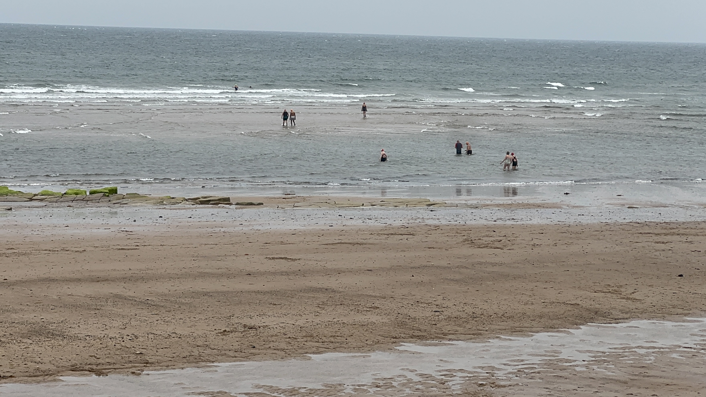

Sea temperature
--°C
Loading weekly comparison…
Loading latest update…
Recent observations from this coastal sea-temperature series
Browse more observations →
From Panama Swimming Club View on Instagram →Sea temperature is a satellite-based coastal estimate, not a beach-step reading or a safety assessment.
This Panama Swimming Club proof of concept is being developed independently ahead of committee review.
Sea-temperature source details loading…
Air temperature, wind, weather and UV data are supplied by Open-Meteo. Tide predictions use Open Waters / Neaps and TICON-4 harmonics for North Shields and are not for navigation.